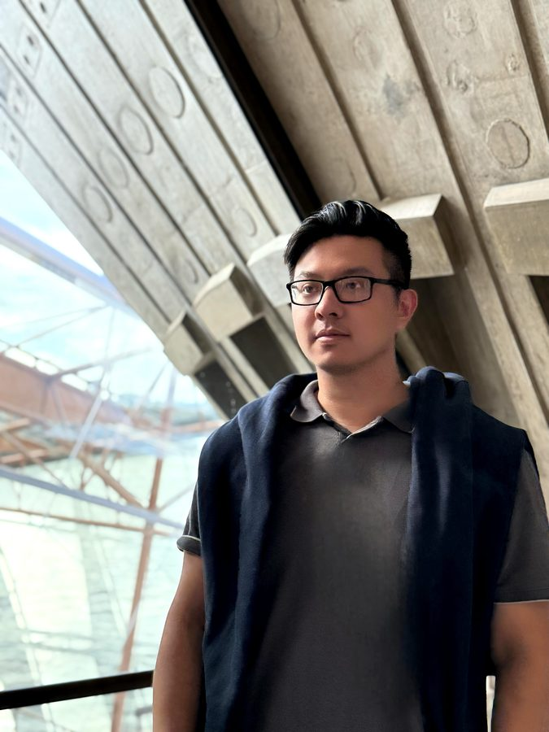
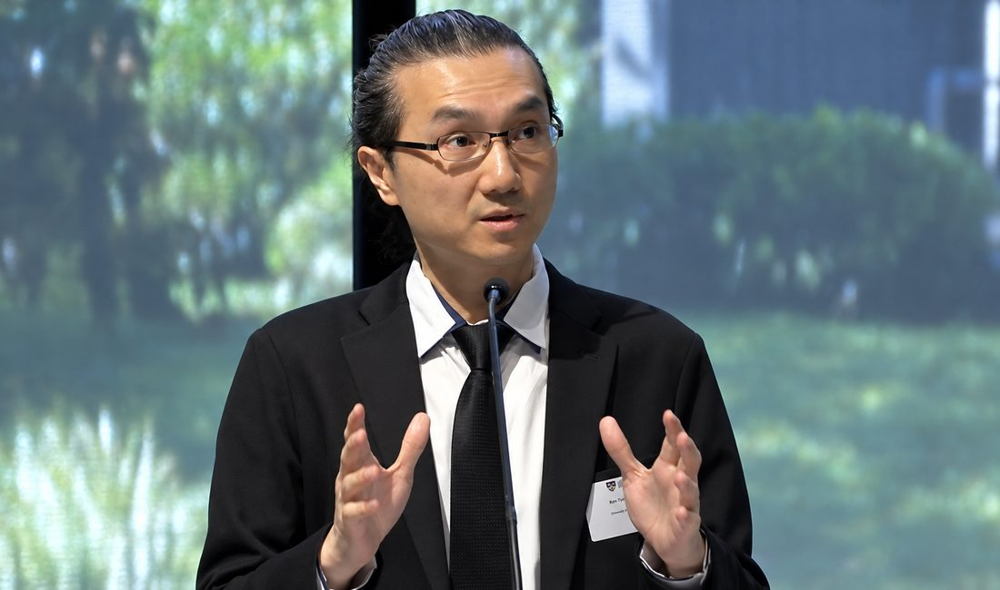

Dr Mackenzie Siyuan Zhuang
Postdoctoral Research Associate
The University of Sydney
Developing biomedical microfluidics for single-cell analysis, point-of-care diagnostics, and healthcare technologies.
The people behind VirChue Bio
We are scientists and researchers united by a simple purpose: to help people live healthier lives. Our curiosity about blood flow and thrombosis drives us to turn rigorous research into practical tools, with care, collaboration, and a commitment to better health for everyone.
Postdoctoral Research Associate
The University of Sydney
Developing biomedical microfluidics for single-cell analysis, point-of-care diagnostics, and healthcare technologies.

PhD researcher · Mechanobiology
CEO and Co-Founder of HemoByte
The University of Sydney
Investigating how mechanical forces and blood flow contribute to clot development, with an interest in future point-of-care technologies.

Professor of Biomedical Engineering
The University of Sydney
Professor Ken-Tye Yong is Professor of Biomedical Engineering at the University of Sydney and Founder and Director of the Light and Advanced Systems Laboratory. His research spans biomedical engineering, microfluidics, sensing and AI-enabled scientific discovery. His work on Force-Gated Thrombosis focuses on translating mechanobiological insight and haemodynamic forces into predictive models that identify spatial regions of elevated clot-initiation propensity, linking fundamental theory with microfluidic validation and translational biomedical applications.
Publication
Force-Gated Thrombosis (FGT): A Non-Equilibrium Mechanical Theory of Shear-Induced Blood Clot Initiation. bioRxiv, 2026. doi:10.64898/2026.05.17.725779
The platform is a research beta. Team research interests do not establish calibrated patient risk prediction or clinical validation of this software.